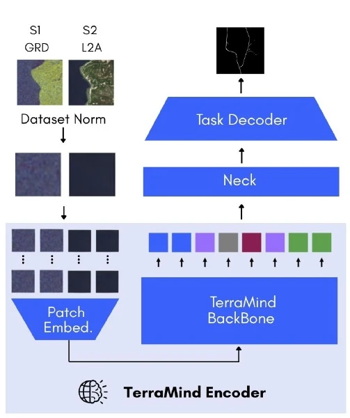
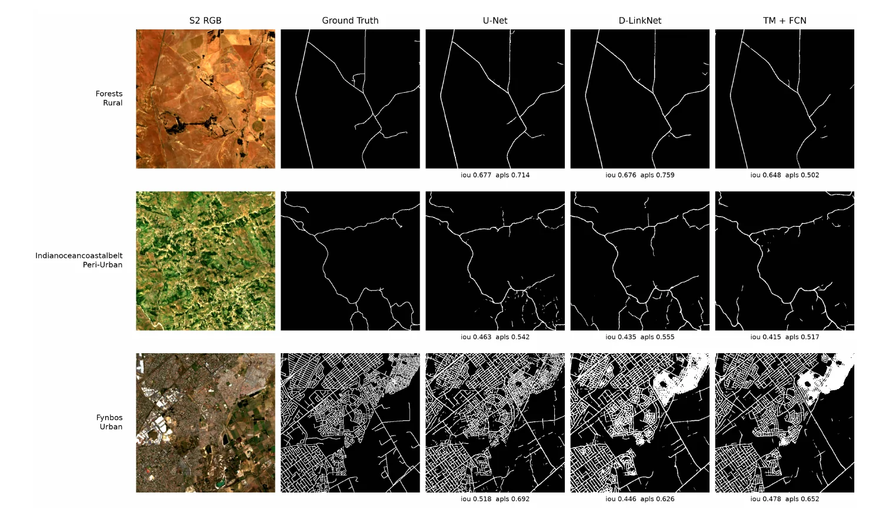

Adapting and Benchmarking TerraMind Against Task-Specific Baselines for Multi-Modal Road Extraction across Urban, Peri-Urban and Rural Regions
Catherine adapted TerraMind, a multi-modal geospatial foundation model, for 10 m road segmentation by (1) comparing decoders and fine-tuning fully versus using the LoRA approach, and (2) benchmarking it against task-specific U-Net and D-LinkNet models.
Supervisors: Patrick Marais and Jonathan Shock
Contribution
Catherine's sub-project tests whether a geospatial foundation model pretrained on Sentinel data can match smaller, task-specific networks for road extraction across urban, peri-urban and rural South Africa.
- TerraMind adaptation framework. Built in TerraTorch with 12-band Sentinel-1/2 input; compared Linear, FCN, UPerNet, U-Net and DSCNet decoders under full fine-tuning.
- DSCNet Decoder Selection. Decoupled the Dynamic Snake Convolution Network (DSCNet) decoder from its original model and registered it with TerraTorch for multi-scale TerraMind features.
- LoRA study. Parameter-efficient fine-tuning across target modules (attention, MLP, all) and ranks 4, 16 and 64, with a generalisation-gap analysis.
- Baselines. Integrated D-LinkNet into TerraTorch for multi-band input and benchmarked it alongside U-Net, both with ResNet-34 encoders.
- Evaluation. Bayesian hyperparameter optimisation, three seeds per configuration, six metrics (precision, recall, F1, IoU, clDice, APLS) and per-urbanisation breakdowns.
Goals and research questions
Geospatial foundation models are pretrained on vast amounts of unlabelled satellite data and promise strong results with little task-specific tuning. TerraMind is multi-modal, taking Sentinel-1 radar and Sentinel-2 optical input together, and was the only foundation model reported to beat a task-specific U-Net on the PANGAEA benchmark. Perhaps a larger pretrained model would perform better at the complex task of road extraction.
Research questions
- Which of the five decoders investigated maximises TerraMind's road segmentation performance?
- By varying LoRA's target module and rank, to what extent can LoRA recover the performance of full fine-tuning?
- How does TerraMind's best-performing variant compare with the medium-sized U-Net and D-LinkNet models across the performance metrics?
Method

- Input. Twelve bands, Sentinel-1 GRD (VV, VH) and Sentinel-2 L2A (RGB, red edge, NIR, SWIR), as 256 × 256 crops with dataset-specific normalisation and flip/rotation augmentation.
- Encode. TerraMind v1 Base embeds each modality's 16 × 16 patches as 768-d tokens and processes them with a 12-layer vision transformer.
- Decode. A neck reshapes tokens into feature maps; one of five decoders predicts the road mask.
- Fine-tune. Full fine-tuning, or LoRA on attention, MLP or all modules with rank 4, 16 or 64.
- Baselines. U-Net and D-LinkNet with ImageNet ResNet-34 encoders adapted for 12 input bands.
- Train and evaluate. Dice loss, AdamW, learning rate from Bayesian optimisation, early stopping and three seeds to measure training variance; six metrics on the test split measuring performance overall and by urbanisation.
Results
| Model | Params (M) | Precision | Recall | F1 | IoU | clDice | APLS |
|---|---|---|---|---|---|---|---|
| U-Net | 24.5 | 0.658 ± 0.005 | 0.651 ± 0.008 | 0.654 ± 0.002 | 0.486 ± 0.003 | 0.575 ± 0.003 | 0.447 ± 0.003 |
| D-LinkNet | 31.1 | 0.552 ± 0.005 | 0.615 ± 0.018 | 0.582 ± 0.006 | 0.410 ± 0.006 | 0.537 ± 0.005 | 0.451 ± 0.007 |
| TerraMind + FCN | 101 | 0.587 ± 0.007 | 0.586 ± 0.003 | 0.586 ± 0.005 | 0.415 ± 0.005 | 0.478 ± 0.002 | 0.392 ± 0.005 |
| Decoder | Precision | Recall | F1 | IoU | clDice | APLS |
|---|---|---|---|---|---|---|
| Linear | 0.568 | 0.581 | 0.575 | 0.403 | 0.490 | 0.291 |
| FCN | 0.587 | 0.586 | 0.586 | 0.415 | 0.478 | 0.392 |
| U-Net | 0.527 | 0.588 | 0.556 | 0.385 | 0.455 | 0.354 |
| UPerNet | 0.523 | 0.584 | 0.552 | 0.381 | 0.463 | 0.331 |
| DSCNet | 0.491 | 0.574 | 0.529 | 0.360 | 0.446 | 0.324 |
| Fine-tuning | Test IoU | Train IoU | Relative generalisation gap |
|---|---|---|---|
| Full | 0.403 ± 0.002 | 0.497 ± 0.010 | 18.8% |
| LoRA | 0.373 ± 0.003 | 0.339 ± 0.003 | −9.0% |
Example predictions


Findings and limitations
What we found
- FCN is TerraMind's best decoder. The smallest decoder (the Linear decoder with a single transposed convolution) stays within 0.012 IoU of the FCN decoder (though its speckled output gives the worst APLS). Multi-scale decoders do worse than single-scale decoders (FCN and Linear): the feature pyramids are obtained through learned interpolation that may have obscured road width without offering finer resolution.
- Vanilla LoRA cannot match full fine-tuning. Recall is preserved but precision drops by roughly nine percent, and the gap widens on the connectivity metrics.
- U-Net wins overall. It beats every TerraMind configuration on all six metrics with a quarter of the parameters; skip connections give its decoder 20 m features compared to the 160 m features in TerraMind's tokens.
- TerraMind is competitive only in cities. Its urban APLS is close to the baselines, but sparse rural roads pull its overall score down.
Limitations and future work
- TerraMind's 160 m tokens are the bottleneck; detail enhancement approaches - like Fast Fourier Transform- look more promising than scaling model.
- Only vanilla LoRA with scaling factor 1/r was tested; rank-stabilised scaling or AdaLoRA may close the gap.
- One learning rate was tuned per model because of compute limits.
Downloads
Cite this work
@techreport{li2026terramind,
author = {Li, Catherine},
title = {Adapting and Benchmarking {TerraMind} Against Task-Specific Baselines
for Multi-Modal Road Extraction across Urban, Peri-Urban and Rural Regions},
institution = {Department of Computer Science, University of Cape Town},
type = {Honours project report},
year = {2026}
}